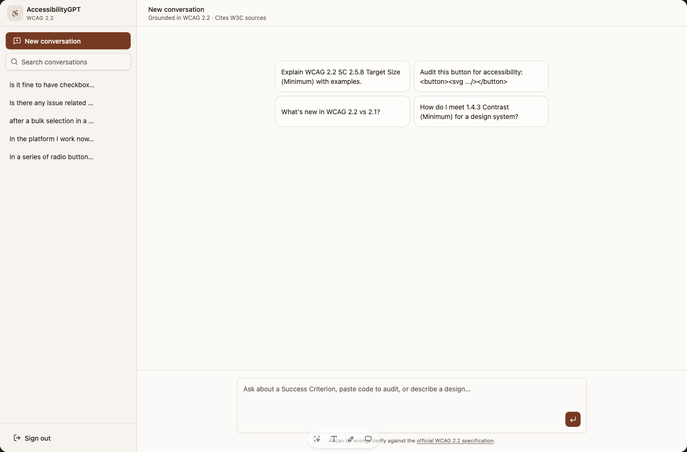

An AI assistant that helps designers apply WCAG guidelines to real product scenarios, explore possible solutions, and make more informed accessibility decisions.
Focus:
Accessibility
WCAG
AI-assisted Product Design
My role:
Product Design
Conversation Design
Workflow Definition
Accessibility guidelines provide a foundation for building inclusive products, but applying them to a specific design situation isn't always straightforward.
Should an error message appear inline or in a notification? What's the most accessible way to communicate a required field? How should keyboard focus behave in a complex interaction?
These questions require more than looking up a checklist. Designers need to understand the context, identify relevant WCAG criteria, and evaluate the trade-offs between possible solutions.
I explored how AI could help bridge that gap.
AccessibilityGPT is a conversational assistant designed to help product designers navigate accessibility decisions using WCAG as a reference.
Instead of searching through documentation for every question, designers can describe a scenario in their own words and ask for guidance tailored to the situation.
The assistant helps identify relevant success criteria, explain their intent, compare potential approaches, and suggest practical next steps.
The goal is to make accessibility guidance easier to understand and apply during everyday product design.

The designer asks a question about a specific component, interaction, or user flow.
For example: What's the best way to communicate validation errors in a multi-step form?
The assistant identifies potentially relevant WCAG success criteria and explains how they relate to the scenario.
Rather than presenting guidelines without context, it helps the designer understand what the requirements mean for the experience.
The assistant outlines practical approaches, explains their trade-offs, and highlights important considerations such as keyboard interaction, focus management, clarity, and feedback.
Where the context is insufficient, it should ask clarifying questions instead of assuming a single correct answer.
The designer uses the guidance to evaluate the available options and decide what to implement or investigate further.
The result is a more informed design decision—not an automatic declaration of accessibility compliance.
I'm designing a multi-step form. Should validation errors appear inline next to each field, in a summary at the top, or both?
WCAG 2.2 does not strictly mandate whether a radio button group must have a default selection or load entirely unselected. Both approaches are compliant, provided that keyboard interaction, labeling, and error handling are implemented correctly according to W3C standards.
Neither WCAG 2.2 nor the HTML specification forbids leaving radio buttons unselected, but each approach serves specific UX and accessibility needs:
Recommended for general settings or low-risk choices: Providing a safe, logical default reduces user effort and helps prevent submission errors.
HTML Standard alignment: Historically, the HTML specification recommended that one radio button in a group always be checked by default.
Keyboard navigation: When a default option is checked, pressing Tab moves focus directly to that selected radio button.
Recommended for required explicit choices: If choosing a default might unfairly bias the user or cause them to accidentally submit incorrect data (e.g., legal agreements, opt-in consents, medical/financial decisions, or survey questions), leave all options unselected.
Requirements when unselected: If the choice is mandatory and none are selected by default:
Clearly indicate that the field is required using text instructions (SC 3.3.2).
Keyboard focus must land on the first radio button in the group when tabbing into the field set.
If the form is submitted without a choice, generate a clear, accessible error message (SC 3.3.1).
Leave radio options unselected when an intentional choice is needed. Use a default only when it clearly reflects user intent and carries little risk. Ensure labels, selection states, and validation are clear.
A response that quotes a WCAG criterion isn't necessarily helpful to a designer trying to solve a product problem.
I focused the concept on connecting three things:
This structure helps bridge the gap between accessibility knowledge and day-to-day product decisions.
The assistant should also distinguish between a formal WCAG requirement, a recommended technique, and a broader usability consideration. Not every good accessibility practice is a specific conformance requirement.
Accessibility decisions can affect whether people can successfully use a product. That makes the quality and clarity of the assistant's guidance especially important.
The concept should prioritize traceable references to WCAG, clear explanations, and honest communication about uncertainty.
When multiple solutions are possible, the assistant should explain the relevant trade-offs rather than present one option as universally correct.
For complex or ambiguous scenarios, it should identify what additional context or testing is needed.
The concept is intended to support designers, not replace accessibility specialists, conformance testing, or evaluation with people with disabilities.
The next step would be to test the assistant against representative design scenarios and evaluate:
These tests would help establish where the assistant provides reliable value and where expert review remains necessary.
AccessibilityGPT explores how AI can help designers move from searching for guidelines to understanding how those guidelines apply to real product decisions.
The opportunity isn't to automate accessibility judgment. It's to make reliable guidance more accessible at the moment a designer needs it.